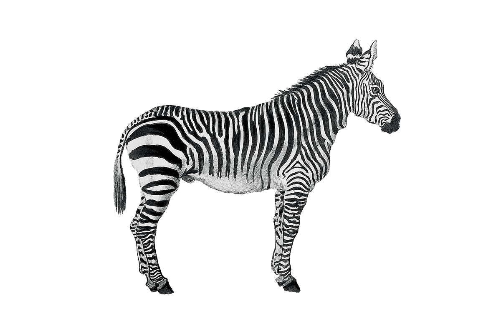
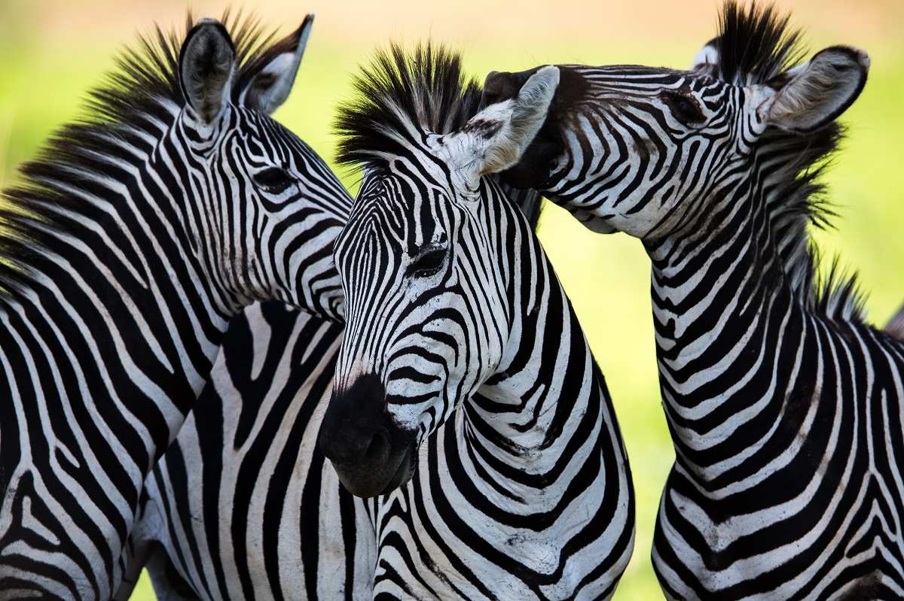

| Nume | Poza |
|---|---|
| Milena Zbera |  |
| Gasca Zebrelor |  |
Locul lor de origine este tot continentul african, în nordul continentului fiind deja în perioada antică exterminată.
Cea mai răspândită variantă este zebra de stepă, care trăiește în savanele din Sudan și Etiopia de Sud, Africa de Est până în Africa Sudică de Vest. Zebra Grevy trăiește în regiunile cu tufișuri aproape uscate și savane este răspândită în Africa de Est, Kenya, Etiopia și Somalia.
Este un animal ierbivor nerumegător. Zebra de munte trăiește pe un areal geografic mult mai restrâns ca celelate două variante, fiind răspândită numai în regiunile mai înalte până la altitudinea de 2000 m deasupra n.m. regiuni situate în Namibia și Africa de Sud.